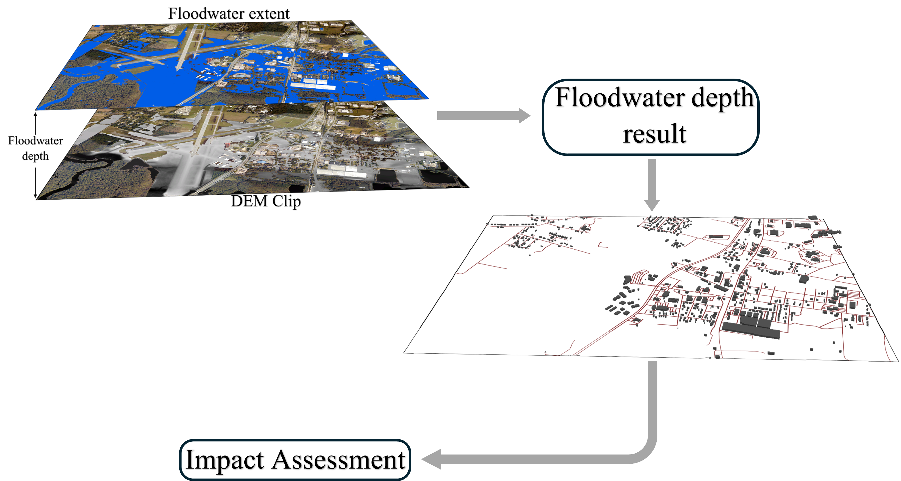
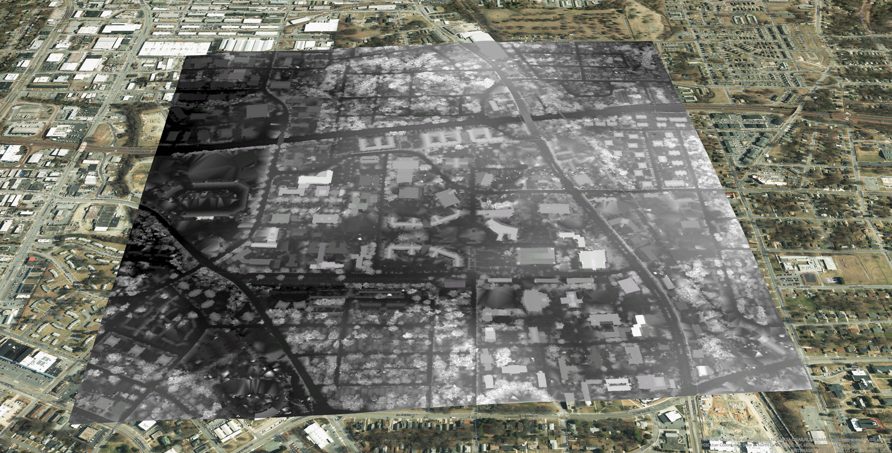
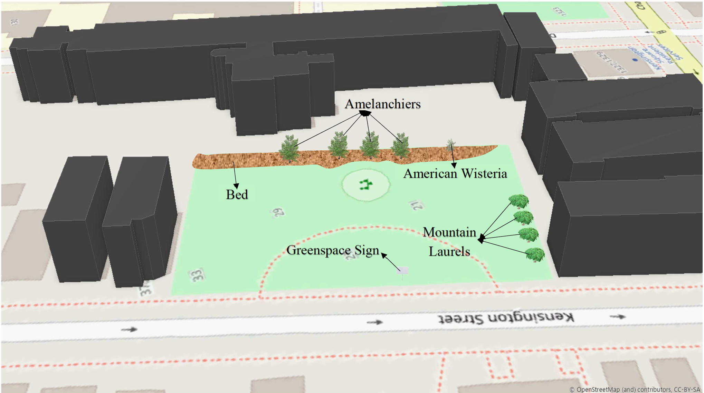
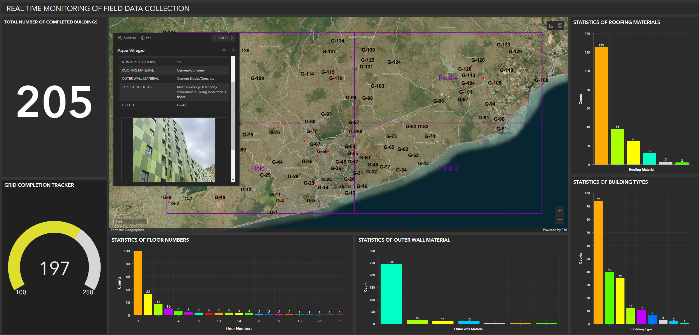
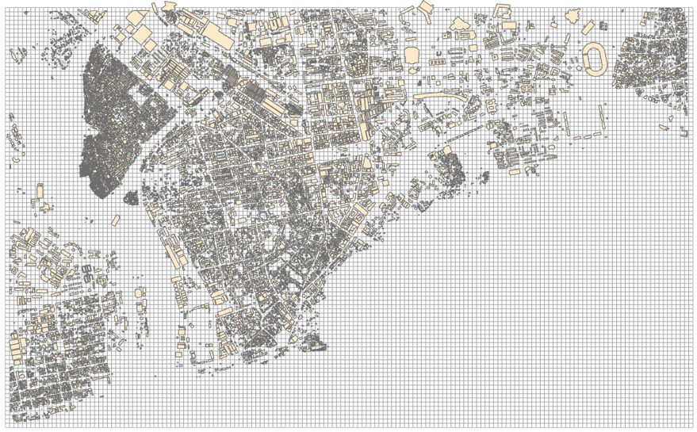
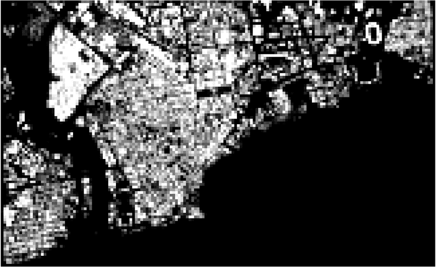

ArcPyLiDARUAV ImageryDEMFlood Risk3D MappingHurricane Matthew
Objective
To develop a 3D flood map of Hurricane Matthew's impact in settlement areas using UAV imagery and LiDAR data, providing depth estimates for affected communities.
Method
Applied spatial statistics and geoprocessing tools in ArcPy to estimate flood depth from DEMs and delineate flood extent across study areas in Greenville and Grifton, NC.
Outcome
Mapped flood-risk levels across affected communities. ~32% of developed land, 26% of buildings, and 66% of roads found to be flood-affected. Actionable insights for emergency response and adaptation planning.

workflow_depth.png
3D Flood risk mapping workflow
'">
3D Flood risk mapping workflow3D flood risk map with building footprints and roads — Greenville, NC
To estimate building heights using 3D LiDAR point cloud data to support spatial modeling and infrastructure assessment for campus structures.
Method
Processed and analyzed LiDAR point cloud datasets in ArcGIS Pro to derive surface elevations and extract building height metrics from the raw point cloud.
Outcome
Produced accurate building height estimates and Digital Surface Models (DSM), enabling improved urban planning, 3D visualization, and geospatial analysis.
LiDAR built-up points cloud

DSM.jpg
Digital Surface Model (DSM)
'">
Digital Surface Model (DSM) map derived from point cloud
To assess urban heat patterns and tree canopy coverage in New Haven, CT to support equitable urban planning and climate resilience efforts.
Method
Conducted block-level geospatial analysis comparing street-tree data, land surface temperature (LST), and NDVI with built-environment characteristics using ArcGIS tools and R (sp, dplyr, ggplot2).
Outcome
Actionable insights on urban heat exposure and tree canopy gaps. Data-driven recommendations for tree-planting strategies and environmental justice initiatives in Connecticut — informing city planning decisions.
Building counts and mean temperature (avg. per census block — New Haven)Comparative analysis of street trees and building counts per census block
GIS — 04
Community Green Infrastructure Spatial Documentation
ArcGIS ProArcGIS Field MapsArcSceneCommunity MappingNew Haven, CTUrban Ecology
Objective
To support community-led green initiatives by mapping and documenting urban environmental improvements — tree planting and park enhancement activities — in New Haven, CT.
Method
Led community groups in tree planting and park enhancement activities. Mapped project locations and progress using ArcGIS Pro, ArcGIS Field Maps, and ArcScene for spatial documentation and visualization.
Outcome
Enhanced local green spaces and produced a geospatial record of community initiatives to guide future planning and long-term environmental stewardship in New Haven neighborhoods.
Tree planting initiative — Watson & Bassett Street, New Haven, CT

Kensington.png
Kensington Park restoration
'">
Park management and restoration — Kensington Park, New Haven, CT
GIS — 05
Integrated Field Mapping & Real-Time Monitoring System — Ghana
ArcGIS Field MapsArcGIS OnlineDashboardsReal-Time MonitoringGround TruthGhana
Objective
To develop a scalable field data collection system to capture ground-truth information for 600+ buildings in Ghana, enabling real-time monitoring and quality control.
Method
Built and deployed an integrated workflow using ArcGIS Pro, ArcGIS Online, Field Maps, and Dashboards to enable real-time data collection, monitoring, and spatial analysis during active field surveys.
Outcome
300+ ground-truth building observations collected with 90% improvement in data collection accuracy. Real-time dashboard enabled immediate QA during field operations and preliminary spatial analysis for informed decision-making.

dashboard.png
Real-time monitoring dashboard
'">
ArcGIS Information Dashboard for real-time monitoring and preliminary analysisArcGIS Field Maps app used for ground-truth data collection in Ghana
GIS — 06
Urban Building Density Mapping — AI Infrastructure Data for Africa
To analyze and model urban building infrastructure across African cities using AI-driven geospatial methods, generating training data for deep learning models.
Method
Processed 60,000+ OSM building footprints into 30 m² gridded raster training masks using QGIS, ArcPy, and R to support deep learning model development for urban mapping.
Outcome
High-quality building density datasets enabling accurate AI-based urban infrastructure mapping across Sub-Saharan Africa. Directly supported the "Dark Development" publication in Elsevier.

footprint.png
30 sq.m gridded OSM building footprints
'">
30 sq.m gridded OSM building footprints across study area

mask.png
Raster mask of building area coverage
'">
Created raster mask of building area coverage per 30 sq.m grid cell
To analyze fire truck accessibility and optimize emergency response coverage in Accra's Central Business District, Ghana, evaluated against NFPA distance standards.
Method
Mapped optimal fire truck routes and analyzed station coverage using ArcGIS Pro network analysis and Google Earth, comparing against National Fire Protection Association (NFPA) response standards.
Outcome
Identified critical coverage gaps where fire stations exceed recommended distances. Spatial gap analysis informing strategic station placement recommendations to improve emergency response times in Accra.
Fire truck routes analysis — Accra Central Business DistrictResponse time analysis highlighting coverage gaps across the study area